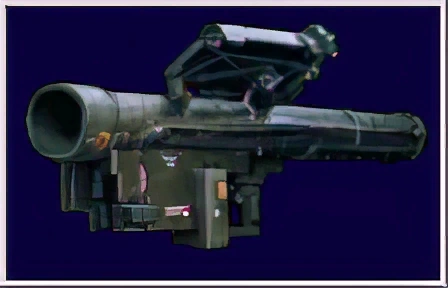
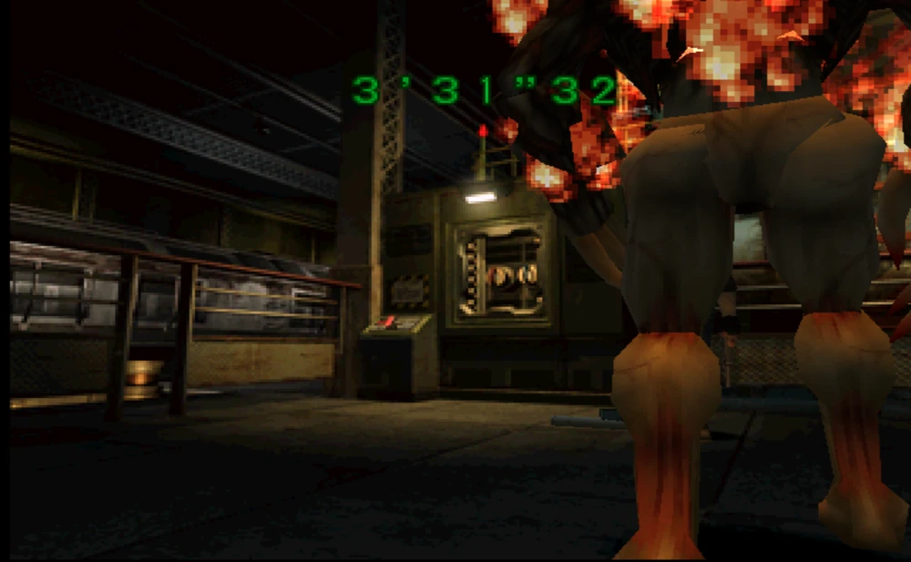

|
 |
|
| Información general | |
|---|---|
| Poder de fuego | Muy potente |
| Velocidad de fuego | Bajo |
| Clase de arma | Lanzamisiles |
| Valor | Ninguno |
| Fuente: Resident Evil Wiki | |
Localizaciones
El FIM-92 Stinger es un arma que hace aparición únicamente en Resident Evil 2.
Este arma tipo lanzamisiles admite hasta dos cohetes.
La recibimos al final del escenario B (sin importar que personaje estemos llevando) y es arrojada al jugador por Ada Wong para derrotar al T-103 R.
Una versión de esta arma con munición infinita puede ser obtenida tras finalizar el escenario A, ya sea con Leon o con Claire en menos de dos horas y media, sin salvar la partida, y obteniendo un ranking de A o B. El lanzamisiles se encontrará disponible en cualquier baúl. El uso de esta arma con munición ilimitada provocará que el máximo ranking dentro de la partida sea el B, sin importar si cumplía con las condiciones de obtener un ranking A.
En versiones posteriores del Resident Evil 2, un lanzamisiles, una gatling gun , y una ametralladora, todas con munición infinita, puede ser encontrada dentro del baúl si escogemos jugar el modo fácil.
Del mismo modo, utilizar cualquiera de estas armas inmediatamente provocará una penalización que limitará el ranking máximo a B.
Adicionalmente, un Lanzamisiles cargado con 5 cohetes aparece en el inventario de Chris Redfield en el modo de juego Extreme Battle. Se pueden además encontrar otros 10 cohetes del otro lado del puente en las alcantarillas B1, cerca del área donde la medalla de Águila se encuentra normalmente.

Curiosidades
- Este arma aparece en otros videojuegos, como por ejemplo Call of duty: Modern Warfare.
- Su uso militar esta orientado a destruir vehículos semi blindados y helicópteros.
- Es un arma originalmente diseñada para ser operada por dos personas (un artillero y una persona recargando el arma).